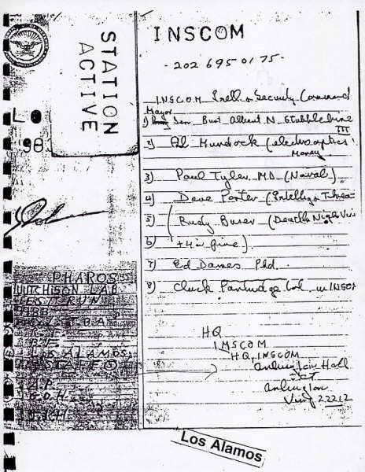

|
Jerry V. Leaphart #JL4468
Jerry V. Leaphart & Assoc., P.C.
8 West Street, Suite 203
Danbury, CT 06810
(203) 825-6265 — phone
(203) 825-6256 — fax
jsleaphart@cs.com
UNITED STATES DISTRICT COURT
FOR THE SOUTHERN DISTRICT OF NEW YORK
-----------------------------------------------x
DR. JUDY WOOD on behalf of the
UNITED STATES OF AMERICA,
Plaintiff/Relator,
vs.
APPLIED RESEARCH ASSOCIATES, INC. et al
Defendants.
-----------------------------------------------x
|
|
EFC Case
DOCKET NO.
07 CV 3314 (GBD)
|
Province of British Columbia ?)
City of New Westminster??)
|
JOHN HUTCHISON, being duly sworn deposes and says, I am of full age and legal capacity and am fully familiar with the facts and circumstances set forth herein.
- I make this affidavit in support of the contentions of Dr. Judy Wood, plaintiff in the above-referenced matter.
- I am familiar with the claims made by Dr. Wood in her complaint in this matter as well as with the broader factual and scientific underpinnings of her claims. As a result of the opportunity to familiarize myself with the content of Dr. Wood’s assertions, via research and via meetings with her, I here assert that information she has amassed and set forth in detail in her affidavit and in her complaint confirm her assertion that directed energy weapons were a causal factor in the destruction on 11 September 2001 (9/11) of the World Trade Center complex (WTC) in New York, NY.
- The foregoing declaration is based on my background and experience as an experimental scientist, having knowledge, expertise and inventorship capacity with respect to devices and processes that are in the nature of directed energy. See: http://en.wikipedia.org/wiki/John_Hutchison
- In summary, and as noted in the referenced Wikipedia article, in the year 1979, I discovered a number of unusual phenomena, while seeking to duplicate experiments done by Nikola Tesla. The phenomena have been named "the Hutchison effect" and they include:
- levitation of heavy objects. Material;
- the spontaneous fracturing of metals;
- changes in the crystalline structure and physical properties of metals;
- fusion of dissimilar materials such as metal and wood, while lacking any displacement;
- the anomalous heating of metals without burning adjacent material;
- disappearance of metal samples.
- Upon examination of the destructive effects done to the WTC on 9/11, as documented by Dr. Wood and as reviewed by me, I can and do assert that the WTC was destroyed by devices that are scaled up, refined and/or weaponized versions of the effects that I named the "Hutchison effect." Some of the evidence which illustrates this is pictured in Table 1.
- In the years from and after 1979, many members of the so-called and aptly named Military-industrial-complex (MIC), have visited my lab, corresponded with me and/or in a variety of other respects observed my work and my inventions.
- At the end of this document, Figure 4 and Figure 5 are examples of correspondence I have received from these individuals or organizations.
- My work has been classified as a matter of National Security by the Canadian Security Intelligence Service (see Figure 2).
- In the course of my research, I have come across many effects, some of which are described below.
- Holes are found to appear in glass — and commonly a white outer layer of material forms.
- I have witnessed slow fusing/melting together of rubber and steel samples.
- I have witnessed effects on aluminum blocks, which have turned to dust or, white powder has shot out and later settled on some of the samples.
- I have witnessed the tops of steel bars turn to dust and white powders as well as chrome plating being "blown off" other samples.
- At various times since 1980, I have witnessed anomalous effects of foaming water in some experiments.
- I have other samples of dissimilar materials, such as wood and metal, that have fused together during experiments.
- I have also witnessed dissimilar materials fusing together into "globs".
- I have witnessed, in about 80% of cases, the effects of lift and ballistic lifts, sometimes to an unknown height or movement to an unknown distance. These lift effects have been seen to occur with objects of only a few grams (ounces) in weight to approximately 750 kg (1500 lbs).
- I assert that the total energy input to my set of test equipment has been between 75 watts and 4000 watts (4kw), at 110 volts, depending on the equipment and the test being done.
- I assert that my experiments and results have been reported on CTV (Canadian Television) news and by Government personnel.
- Many of my experiments have caused effects at a distance — such as levitation of objects, vibration of objects and other effects.
- On some occasions, effects have been seen at around 300 feet away from the main area of experimentation, one such case being in Dec 2007 when plumbing on the ground floor of the building my experiments were being performed in failed and caused minor flooding and that part of the building had to be evacuated.
- In 1979, Mark Murphy and another individual, Mr. Murphy of Canadian Pacific Air, lived in the same building as my lab at 1458 East 29 Street, Lynn Valley, North Vancouver and they witnessed levitations of and effects on samples.
- During 1980 Bill Ross (a civilian) and Mel Winfield (of Vancouver) also visited my lab at 1458 East 29 Street and they observed and took photos of levitations. These photos were later published in Dr. Winfield’s book "The Science of Actuality".
- I assert that CBC news reported on my experiments during this time.
- In 1981, Philip Deldebbio of Brewster New York, owner of the Hipotronics company, along with his secretary witnessed steel turn into dust and they handled the samples.
- Also in 1981, George Hathaway and Alex Pezarro caught some of these events on 8 mm film.
- IBM engineers, including Brian Borrodale visited me and observed my experiments, and later a Mrs. Murphy (wife of Mr. Murphy) of the Alex Pezarro’s Washington State group also visited and observed results.
- I assert that members of an organization called the San Diego Laser Group visited me in approximately 1981 and saw the results of experiments.
- I assert that also in 1981 I witnessed a persistent white fog effect in some experiments and this has appeared in subsequent experiments in 1984 and 1985.
- In about 1982, Alex Pezarro had a meeting in Washington D.C. with generals and I was told they wanted to go directly to Ronald Reagan to discuss setting up a research project, but it was decided at that time to ask another team to do further investigation.
- In 1982, I moved my lab to 142 Riverside Drive, North Vancouver.
- In 1983, a group from Los Alamos National Laboratories (LANL) contacted me on behalf of the US Government. At that time, the following individuals were involved: Flynn Marr (Lawyer) Joanne Maclusky (Lawyer for Pharos Technologies), George Hathaway (Scientist), Alex Pezzaro, Col. John Alexander, Bob Friedberge and John Rink.
- Also at that time, I gave private demonstrations to Edna Drake and Bill Ross (who were civilians).
- During the work with the Los Alamos Team, Starlite Lighting, who resided in the industrial premises adjacent to the lab witnessed effects in their own warehouse.
- Experiments performed with the Los Alamos team were videotaped, but I have been told, following requests, that these tapes are no longer available.
- During experiments performed with the Los Alamos team, large effects took place outside the target areas such as mirrors breaking, fires starting and there were unusual effects with the lights and other things.
- Col. Tom Bearden said the project with the Los Alamos team was sabotaged by either Bob Freeman or Bob Friedberg.
- In 1983, I moved my lab again - to 3744 East Hastings Street where I gave a demonstration to Alyn Edwards — a newscaster for BCTV. I also gave demonstrations to a Cameraman for the Tony Parsons News Hour and Grant Fredricks of CKVU TV news now (Global TV).
- In the period 1983-84 I worked with the Pharos Technologies/INSCOM Team which included General Albert Stubbeline, Major Ed Dames, Dave Porter and others who were based in Washington D.C. (See Figure 1 below).

Figure 1
- Around 1984, information was presented to Ed Murand of the Iranian embassy and Henry Kissinger of the USA government in an effort to get financial support for Mel Winfield at a level of $500,000, to fund research into the effects already observed in other experiments.
- I assert that Col John Alexander stepped in to prevent funding being given.
- In 1985, I completed 2 days of controlled experiments for Col. John Alexander, who was representing interests in Washington D.C. Again, video recordings were made but this time, the report he produced was not classified, and I have copies of the report and the video recordings.
- In 1985, I gave demonstrations for George (Jack) Houck of McDonnell Douglas and around this time, I witnessed some metal samples giving off a grey mist during some experiments.
- Also in 1985, Alex Pezzaro was present for some of the tests and Danny Bottemly was present for others. In these tests, we witnessed molten, yet cold, metals and we saw samples bend into weird shapes and on some occasions, whole samples disappeared and reappeared.
- At around this time, a University of British Columbia Professor also attended one of the demonstrations, but left in a state of utter confusion and disbelief.
- I assert that George Hathaway and Norman Hathaway witnessed or filmed further demonstrations or experiments at around this time.
- I assert that Mr. Dennis Edmonson of NASA discussed the possibility of obtaining $5 million in research funding being made available from NASA or Boeing.
- Also in 1985, CKVU T.V. filmed experiments for the news hour and we also witnessed a mid-air "aurora" type effect.
- In 1986, Richard Sparks was my agent for SBIR (Small Business Innovation Research) for the US DoD. My privacy coordinator for the CIA the was John M Wright. Also Col. Rogers was involved in trying to help retrieve documents concerning my work.
- On March 24 1986, on the orders of Erik Neilson, Deputy Prime Minister of Canada, the Canadian DND Director of Scientific Technical Intelligence Dr. Lorne A. Kuehne came to my lab with Dr. Wilson and Dr. Lokken of the Defense Region Establishment Pacifica (DREP) to investigate my work.
- I assert that George Hathaway also assisted in these demonstrations and filmed the experiments using 5 different cameras, though he later stated that none of these films or photographs came out.
- I assert that this phase of research was supported in Ottawa by Dr. Earl Ledger, Tim Deer, Dr. Laurie, Mr. Szabo, Col. Larson along with Ed Bishop, Brian Wallace and Bob Guyruski.
- I have documentation that "Car Check" of Canada was established as a front-company for the Canadian based research, and all results were classified and remain so.
- In 1986, the Max Planck institute in Germany undertook tests on my metal samples. Their tests showed anomalous properties of the crystal structure of the samples. The crystalline structure was "changing very rapidly over time".
- In 1987 I moved to 560 Cambe Street, by invitation of George Lisa case and Alik Sheresesky of Owl Industries. Boeing Aerospace Corporation provided $80,000 of funding for experiments through Eronn Kovacks.
- Also in 1987, Electra Briggs (Philadelphia) has or had case loads of files, taped conversations original videos pertaining to this research which were never returned.
- Also in 1987, George Lisacase made his own film of effects in my lab — including the levitation of a 1500lb transformer and nails floating through the walls.
- Again in 1987, we saw fuming effects that we called "Carl the ghost". This effect happened frequently and has been recorded both on videos and 8mm film.
- I assert that Cal Barton of CBC Night Final News broadcast a report about our experiments around this time.
- Again in 1987, Dr. Peter Kokoshinegg and his wife Dr. Margarita Kokoshinegg (of Austria) advised me to "get out" of the Boeing Group.
- Also around this time, Roland Bredow took many photos of a "fuming type of energy" over an 18-month period and as many as 4000 photos of experiments have been kept by the Max Planck institute.
- In Germany Seimens Laboratories, BAM labs and Berlin University have also done tests on my work, but that communication between them was very limited.
- By this point, many articles had been written discussing aspects of my work, such as those in Esquire Magazine and in other publications in Germany, Japan and the UK.
- Some time in the period 1987-1989 I was told by Alik Sheresesky and George Hathaway that while at the lab at 13 street, most of the above the building vanished. The insurance companies also said that this had happened.
- In 1989, I was contacted by Prince Hans Adam Liechtenstein expressing an interest in my experiments and research. I have been in communication with him since that time.
- In 1989, I had taken a trip to Germany, to do some work at the Max Planck Institute. I planned to have equipment shipped over there, but during my time away, government officials took the lab equipment while it was in transit and while it was in the previous lab installation.
- Lawyers Hogson and Kowasky worked on my behalf to get the equipment shipped safely by Rolf Kiperling.
- Judge Paris set up a B.C. Supreme Court order to protect the lab equipment.
- The Vancouver Sun ran the story of the lab equipment seizure on the cover of the Feb 22, 1990 edition. At this time, Henry Champ of NBC got involved in covering the story while I was in Germany.
- Around this time, George Hathaway, Col. John Alexander and some people at Sandia Labs (USA) and Washington D.C. were still involved in analyzing my experiments, but they did not intervene in the seizure of the lab equipment.
- I assert that George Lisacase formed a company called Pinnacle Oil International and he stole some of the energy cell technology I had developed and used it for oil prospecting. George Lisacase also has/had videos of levitation demonstrations as well as photos of free energy tests and experiments.
- In 1991, a documentary film featuring Hutchison Effect experiments aired in 80 countries.
- Also around 1991, an article on the Hutchison Effect was published in several places - Raum und Zeit [Space and Time], the Newsletter of the Planetary Association for Clean Energy, the Electric Spacecraft Journal, "Extraordinary Science", and a publication called "Space Power".
- On April 6, 1993, TVASAHI in Japan aired an interview with me.
- Also in 1993, Nobuo Yokoyama, as part of the Tokyo Free Energy Project, published a Japanese book about the Hutchison Effect.
- In 1996, a new set of laboratory equipment was assembled with electric and electronic gear salvaged from Canadian Navy vessels.
- Also around 1996 actress Caroline Allart felt the force fields from my experiments with Barium Titanate samples.
- In 1997, more levitation experiments were demonstrated to members of the company "Harry Delighter Productions" and they put these in a video called "Free Energy — The Hunt for Zero Point".
- In year, 2000 my premises were raided by the local New Westminster Police Department and other people with them photographed things in my apartment during the raid.
- In year 2000, Jim Cherry of "World Wireless Productions" (for Miramax motion pictures) witnessed the effect of the floor of my apartment starting to buckle or roll. This event was also recorded on video. Jim Cherry was with a team that included a News Week reporter and one from TIME Magazine.
- On April 29 2001, some demonstrations of free energy experiments/technology were given to Hiroshi Yamabe of Japan and Thomas Messer of Germany.
- In 2003, more demonstrations were given to Gryphon Productions TV for their "Beyond Invention" series and Wesley Baker was interviewed in the program, as he had witnessed similar demonstrations given by me in the 1980’s.
- In the period 2004-2005, Bruce Burgess of Blue Book Films worked on another film project with me.
- Also in the period 2004-2005, I made attempts to retrieve copies of official reports about my experiments through FOIA requests in Canada and the USA, but nothing of value was released to me.
- In 2005, Lama Lee, who lived quite close to me, reported to news crews about metal ornaments "dissolving" in her apartment, near the time I had done some of my experiments.
- In 2005, Mayor M. Wright of New Westminster visited my apartment because he said he had got reports of concrete breaking or cracking and citizens being in distress, apparently following some of my experiments.
- In April 2005, I spoke on Art Bell’s US "Coast to Coast" radio show and discussed the likelihood of the replication of my technology by other groups within the military.
- I assert that between June 2004 and April 2005 I experienced a significant increase in enquiries from a number of organizations such as NASA, the Pentagon and from SAIC. Some of them requested I send videos.
- In 2005, Japan TV aired a program called "x51. files" which included videos of my experiments. Also, around this time Harold Berndt of Surrey, BC filmed some demonstrations of effects and posted a video on the American Antigravity Website.
- Also in 2005, I sent a video to the Air Force Division of the Pentagon and I sent one to NASA.
- In 2006 a group from National Geographic TV filmed odd vibrations and fires during my experiments.
- Also near that time, Nancy O' Donnell a TV director and others from Chinese TV saw and/or filmed melting rubber and steel during my experiments.
- In 2006 several other groups filmed effects on Redbull cans and other effects on a toy ship. These effects included "lightning bolts" and water foaming.
- Again in 2006, videos of my experiments were shown to 400 staff officers at the Pentagon and it received standing ovation.
- On Dec. 22, 2006 John Ealer of Motion Picture Productions came to film my experiments for a program called "Earth's Black Holes" (which was aired on the History Channel in January 2008).
- In November 2007, I was visited by Dr. Ludwick of Germany, Jeane Manning, Peter Scholls and others and they took more videos of my experiments.
- I assert that others who have expressed interest in my work, or offered letters of recommendation include Dr. Yaho, Caroline Sutherland, Joe Clark, Dr. Hal Puthoff (See Figure 8), Dr. Robert W Koontz (see Figure 9) and MP Chuck Cook (See Figure 2 and Figure 3).
|